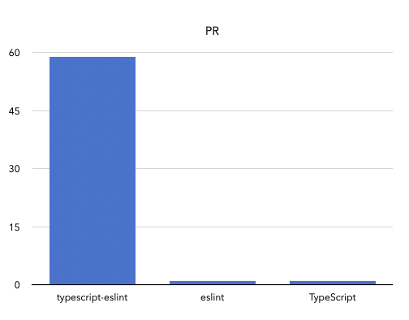

2024 회고
결혼, 이사, 회사일로 바쁜 한 해였다. 그래도 시간을 내서 개발 분야에서 이것저것 해보려고 노력했었다.
하루의 많은 시간을 회사 일을 하면서 보내지만 회사일 외에 개인적으로 진행한 것들에 대한 회고를 작성해 봤다.
오픈소스 기여
한동안 쉬고 있었던 오픈 소스 기여를 다시 시작했다.

주로 typescript-eslint에 기여를 했는데, 이슈를 해결하려다 보니 연관된 프로젝트인 eslint 와 TypeScript에도 기여를 할 수 있는 기회가 있었다.
가장 기억에 남는 기여는, any 타입을 return 하는 코드를 검출하는 no-unsafe-return 규칙에 Promise<any>에 대한 return도 검출하는 기능을 추가하는 것이었다.
기억에 남는 이유는 기능 제안, PR 그리고 연관된 프로젝트인 TypeScript에 기능을 제안하는 것과 PR지 모두 경험했기 때문이다.
이 기능을 구현하기 위해서는 Promise가 await 된 타입을 가져와야 했는데 이를 TS Compiler API로 직접 구현하려면 다소 까다로운 작업이 필요했다.
하지만 TS Compiler API에는 getAwaitedType 이라는 private method가 이미 구현되어 있었고 정확히 내가 필요한 기능이었다. 이를 public으로 바꿔달라는 제안을 TypeScript에 생성하고 PR을 생성했다. 작업 자체는 매우 간단했지만 처음으로 TypeScript 프로젝트에 기여하게 되었던 점이 좋았다.
typescript-eslint에 기여를 꾸준히 하다 보니 컨트리뷰터에게 주는 리워드를 두 번 받게 되었다.
투자한 시간에 비해 큰돈은 아니라고 생각하지만 애초에 돈을 생각하고 기여한 건 아니었기에 액수에 큰 의미를 두진 않는다. 내 활동이 오픈소스 커뮤니티에서 인정받고 있다는 느낌이 들어 동기부여가 되었다. 500달러씩 두 번 받아서 총 1000달러를 받았는데 내년에는 조금 더 열심히 참여해 봐야겠다.
개인 프로젝트
html-eslinthtml-eslint는 eslint로 html 문법을 검사할 수 있는 플러그인이다. 3년 전쯤 리액트를 사용하지 않고 html 을 직접 작성해야 했었는데, html을 린팅하는 도구가 있으면 좋겠다는 생각에 만들었었다.
작년부터 버그 제보 정도만 처리하던 프로젝트였는데 올해는 좀 더 프로젝트를 발전시켜보기로 했다.
리액트를 사용하지 않더라도 순수하게 html, css 만으로 웹 페이지를 만드는 경우는 드물다. JS로 html 문자열을 만들어서 UI를 생성하는 경우가 많은데 이때는 이때도 html-eslint를 사용할 수 있으면 좋겠다는 이슈 제보가 들어왔다.
까다로운 점은 JS에서 html을 만들어 사용하는 경우 expression을 같이 사용할 수 있다는 점이었다.
button.innerHTML = /* html */ `
<button id=${myButtonId}> </button>
`;위 코드에서 ${myButtonId}는 html 문법이 아니기 때문에 html parser로 파싱하는 것이 불가능하다.
하지만 저 부분만 파싱을 건너뛸 수 있다면 다른 html 부분은 파싱하는 것이 가능하다고 생각했다.
다행하게도 이렇게 파서에 커스텀한 기능이 필요할 것 같아서 es-html-parser라는 HTML 파서를 직접 만들어서 사용하고 있었다. es-html-parser에 특정 코드 범위의 배열을 옵션으로 추가하면 그 부분은 파싱할 수 없는 템플릿 영역이라고 인식하여 파싱을 건너뛰는 기능을 추가했다.
그리고 이 기능을 활용해 JS내 html 코드도 린팅할수 있게 되었다.
html`
<div>
<span>
</span> <--- Wrong indent error
</div>
`기능 추가 이후 조금씩 사용하고 있는 프로젝트들 수도 늘고 있다. 현재는 github 기준으로 약 1900개 프로젝트에서 사용하고 있다. 흥미로운 점은 JS가 주력인 프로젝트가 아니라 Java나 C++ 기반 프로젝트에서 html-eslint를 활용하고 있는 경우가 많다는 것이었다. 아무래도 프론트엔드가 주력인 프로젝트에서는 보통 React, Vue, Angular 등을 사용하지만 프론트엔드가 주력이 아닌 경우 html 을 직접 작성하는 경우가 많아서 인 것 같다.
25년에는 다양한 템플릿 엔진 (handlebar, twig.js)과 함께 사용할 수 있는 방법과, <script> 태그 내의 JS 코드를 린팅할 수 있는 기능을 개발해 보려고 한다.
이 프로젝트는 git diff 출력 결과를 파싱해서 Tree 형태의 결과물로 만들어 내는 라이브러리이다 과거에 구상했던 프로젝트 중에 git diff 결과를 프로그래밍적으로 다뤄야 해서 만들었었다. 이미 git diff를 파싱하는 JS 라이브러리들이 몇 개 있었지만 프로젝트가 오래되었고 과거 스타일의 JS로 작성되어서 typescript를 지원하는 라이브러리가 없어서 직접 만들게 되었다.
하지만 구상하던 프로젝트를 접게 되어 필요가 없어졌고 한동안 방치되었다.. 그런데 그 사이 다른 꽤 큰 프로젝트 들에서 이 라이브러리를 사용하고 있다는 것을 알게되었다.
그리고 thanks.dev를 통해 cody로부터 소정의 금액을 기부받기도 했다.
개인적인 필요에 의해 만든 라이브러리로 예상하지 못했던 귀여운 수익을 낸 있는 경험이었다. 내가 필요해서 만든 라이브러리는 다른 누군가에게도 필요한 경우가 많다는 것을 깨달았고, 앞으로도 직접 만든 라이브러리를 자주 공유해 봐야겠다는 생각이 들었다.
책
거인의 시간이미지 출처: 교보 문고
이것저것 생산적인 걸 하고 싶은데 회사일, 오픈소스, 게임, 유튜브도 보다 보면 하루가 너무 부족한 것 같다는 생각이 종종 들었다. 그러던 중 서점에서 거인의 시간이라는 책이 눈에 들어와서 읽어 보았다. 성공한 사람들이 더 많은 일을 해내기 위해 사용하는 시간 관리 방법에 대해 안내하는 책이고 다양한 방법을 안내하고 있다.
책에서 안내하는 시간 관리 방법을 직접 해본 지 3개월 정도 된 것 같다. 해외여행 갈때도 아무런 계획도 세우지 않고 가는 편인데 책에서는 하루의 계획을 세우는 것을 권고하고 있다. 속는 셈치고 책에 나온 방법을 직접 적용해 보고 있다. 나랑 너무 맞지 않는 방법들도 있어서 취사 선택하거나 방식을 조금씩 변경하고 있다. 확실히 아무 계획 없이 그때그때 일을 처리했던 것보다 더 생산적으로 변하게 된 것 같다.
오브젝트이미지 출처: 교보 문고
2년 전쯤 백엔드를 전문적으로 개발하는 친구들이 이 책을 추천해 줘서 샀었는데, 필요성을 많이 못 느껴서 첫 장도 안 열고 책꽂이에 있었던 책이었다. 최근 NestJS를 이용해서 백엔드 서버를 개발하고 있는데 객체지향적으로 코드를 짜고 있지 않다는 느낌을 많이 받았다. 객체지향적으로 프로그래밍 하는 방법을 제대로 배워보고 싶어서 읽게 되었다.
잘 이해하고 넘어가고 싶어서 자세히 읽다 보니 완독하는데 시간이 조금 걸리는 것 같다. 객체지향에 대해 잘못 알고 있었던 부분이나 개발하면서 찜찜했던 부분을 잘 설명해 주는 책인것 같다.
마무리
2023년 번역글 포스팅 마지막으로 블로그 글을 거의 작성하지 않았는데, 25년부터는 다시 글을 작성해 볼 생각이다. 또 github page로 만들어서 웹으로도 제공할 계획인데 귀찮은 작업이 많이 필요해서 잘 될지는 모르겠다.
2025년에도 꾸준히 오픈소스에 기여를 할 생각이다. 오픈소스에 계속 참여하는 이유는 회사에서 접하는 도메인과 아예 다른 분야에서 개발을 할 수 있다는 점이 재밌게 느껴져서 그런 것 같다. 새로운 오픈소스 프로젝트를 구상하고 있는데 2025년 회고록을 작성할 때 그 프로젝트에 대해 작성할 수 있었으면 좋겠다.